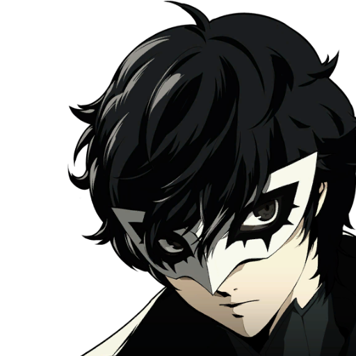
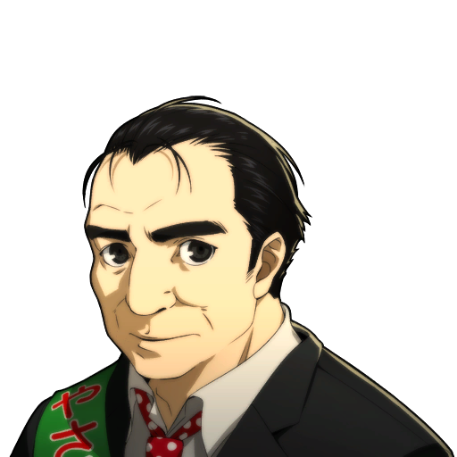
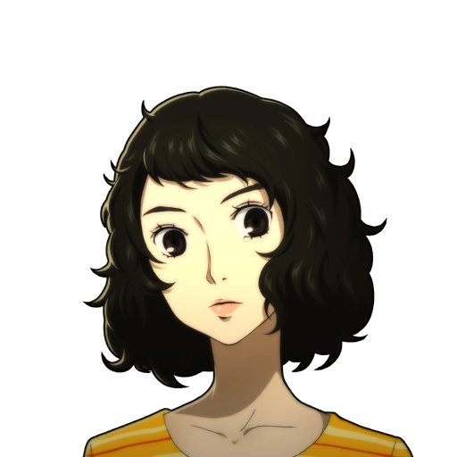

Morgana
We should store documents that will help us the future here...It is necessary to our development as phantom thieves!

Perfect Run (General)
This guide will help keep the protagonist on track during playthroughs.

Chariot Conversation Guide (Ryuji Sakamoto)
This guide will help gain as much confidant exp (for chariot) as possible during runs.

Lovers Conversation Guide (Ann Tamaki)
This guide will help gain as much confidant exp (for lovers) as possible during runs.
Hierophant Conversation Guide (Sojiro Sakura)
This guide will help gain as much confidant exp (for hierophant) as possible during runs.
Death Conversation Guide (Tae Takemi)
This guide will help gain as much confidant exp (for death) as possible during runs.

Sun Conversation Guide (Toranosuke Yishida)
This guide will help gain as much confidant exp (for sun) as possible during runs.

Emperor Conversation Guide (Yusuke Kitagawa)
This guide will help gain as much confidant exp (for emperor) as possible during runs.

Temperance Conversation Guide (Sadayo Kawakami)
This guide will help gain as much confidant exp (for temperance) as possible during runs.
Negotiations - Personalities and Question Answers
This guide will help with collecting persona during runs.
Mementoes - Enemy List
This guide will help with raids of the mementos location.
Compendium - Enemy List
This guide will help with specific persona classes, and weaknesses.
Faciities - Locations, Activies, Time
This guide will help with specific activies and locations to gain more skill points.